Visualizations
The following charts were generated from the simulated data.
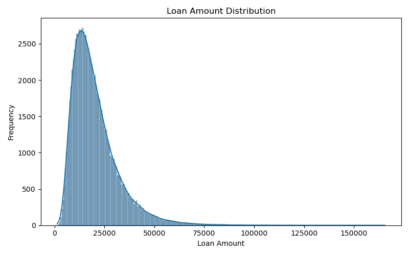 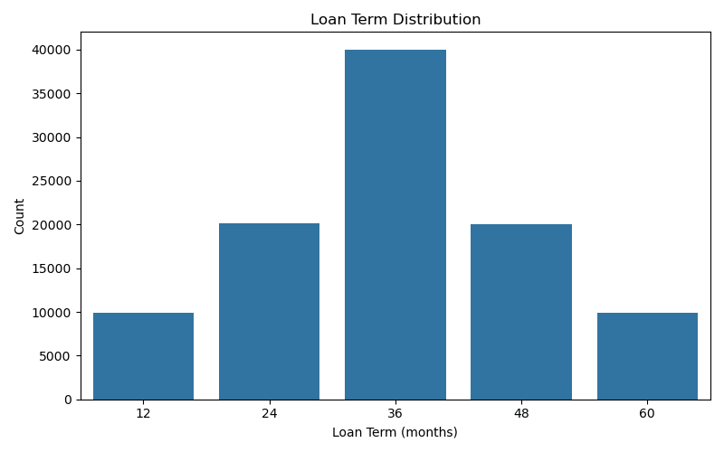
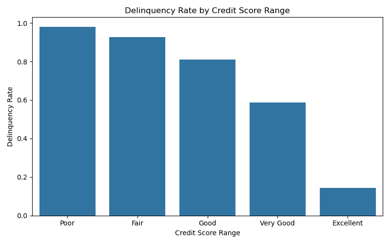
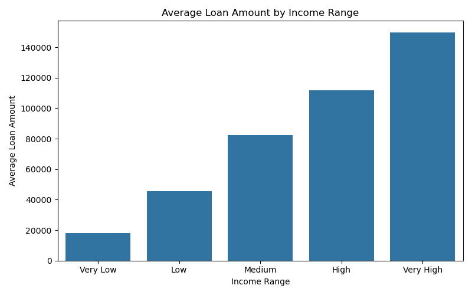
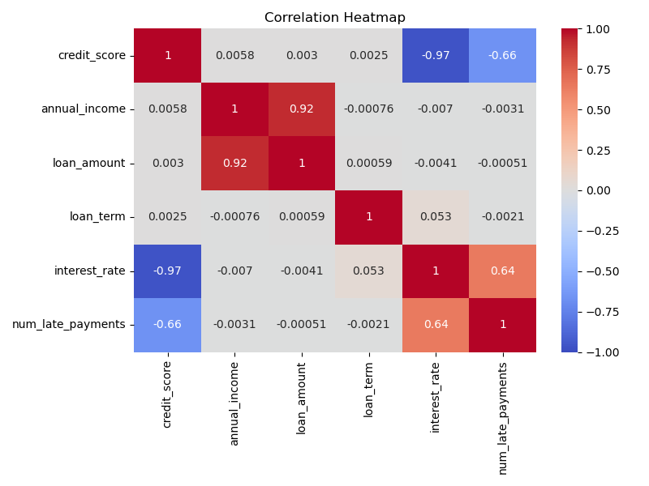
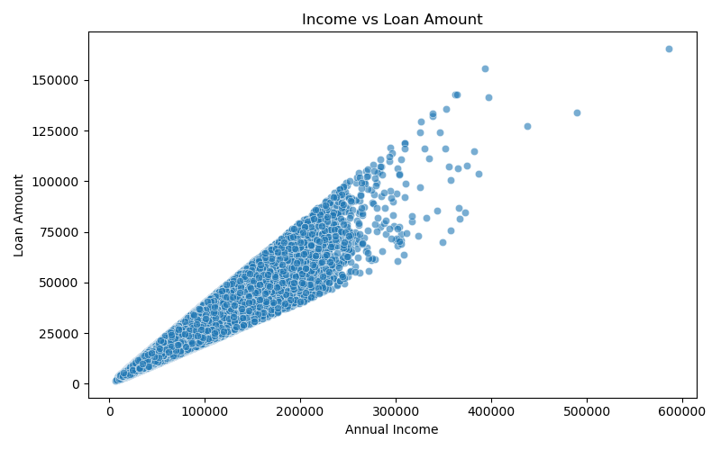
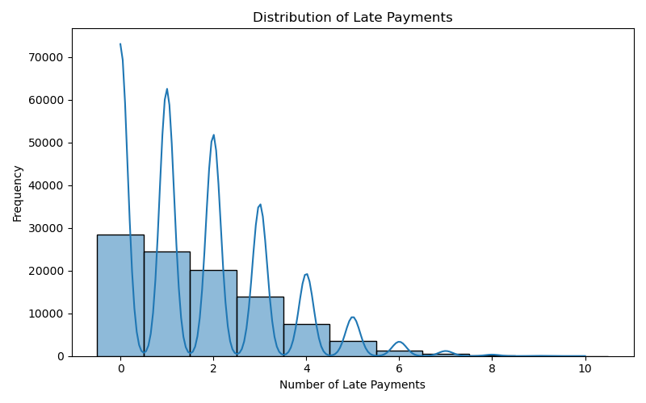
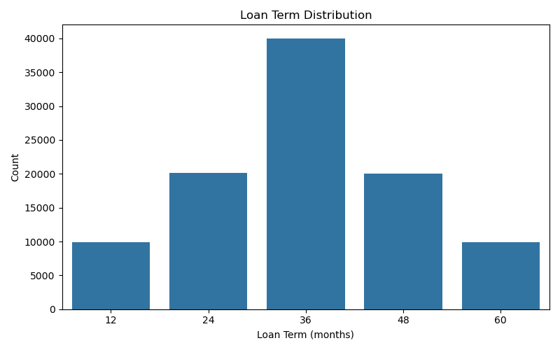
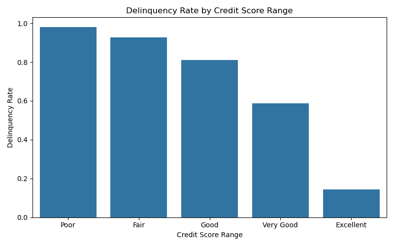
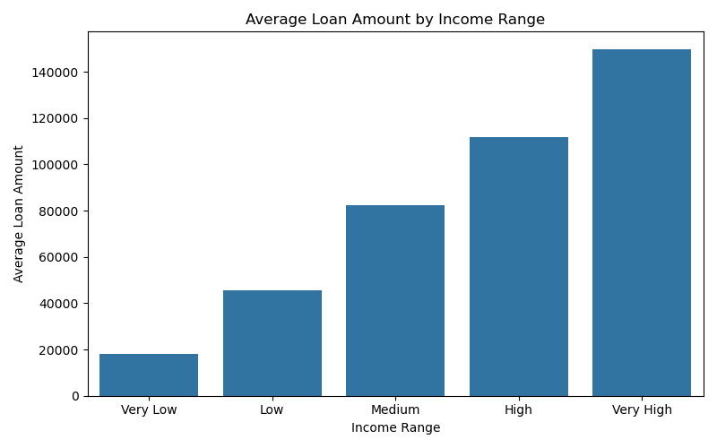
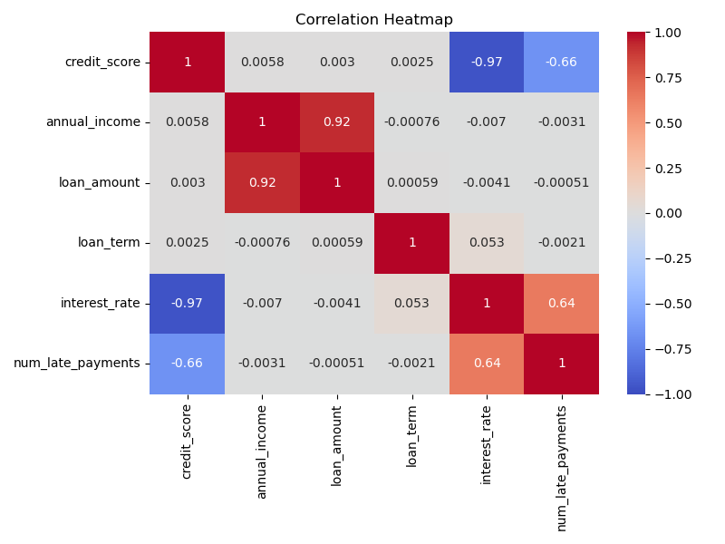
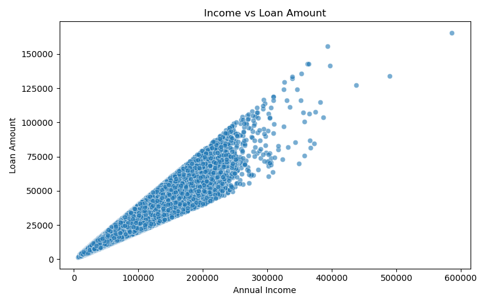
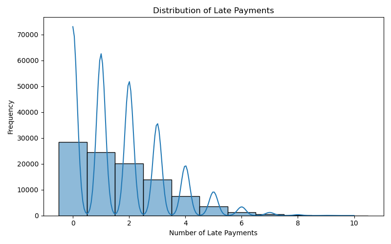
This project focuses on generating realistic synthetic loan data using Python and the Faker library to simulate loan issuance, payment behavior, and delinquency patterns. The data mimics real-world relationships between credit score, income, loan amount, interest rate, and repayment behavior.
The goal is to analyze loan delinquency trends, explore key risk factors, and create a foundation for credit risk modeling and portfolio management.
| Loan Term (Months) | Loan Count | Total Amount | Average Amount |
|---|---|---|---|
| 12 | 9,930 | $202,951,093 | $20,438.18 |
| 24 | 20,106 | $407,499,716 | $20,267.57 |
| 36 | 40,029 | $814,674,379 | $20,352.10 |
| 48 | 20,044 | $409,656,514 | $20,437.86 |
| 60 | 9,891 | $200,825,244 | $20,303.84 |
The following charts were generated from the simulated data.
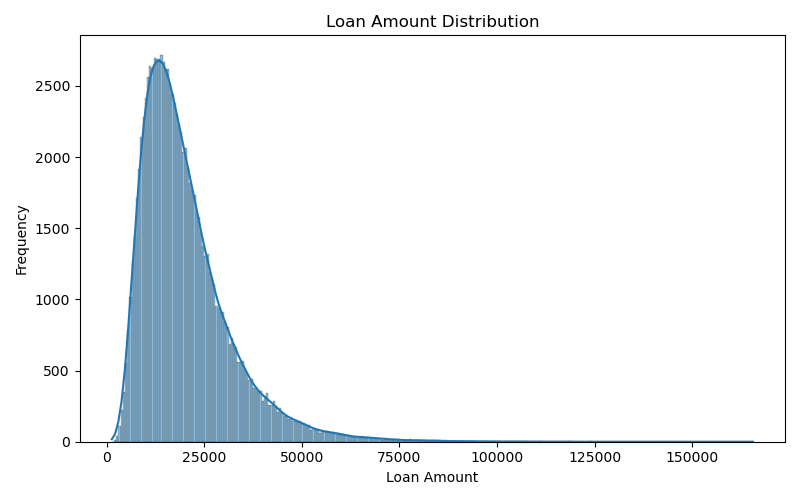
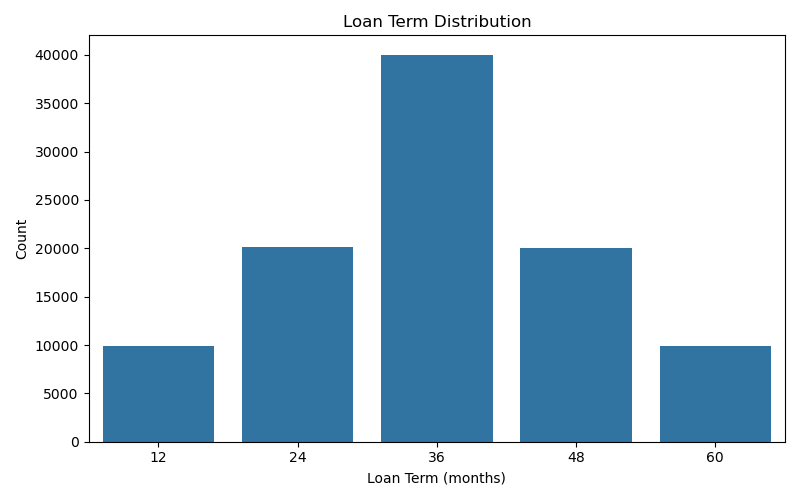
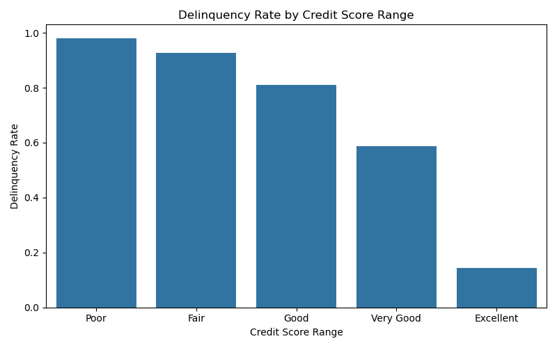
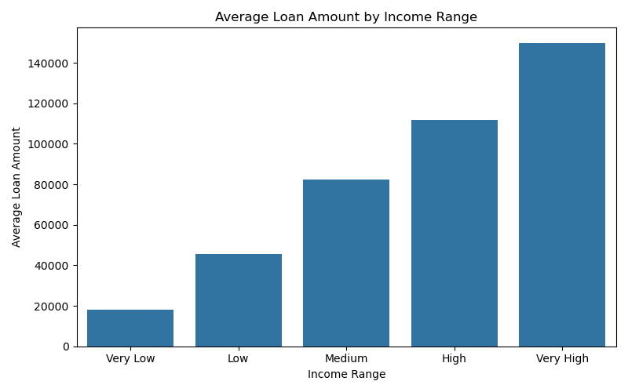
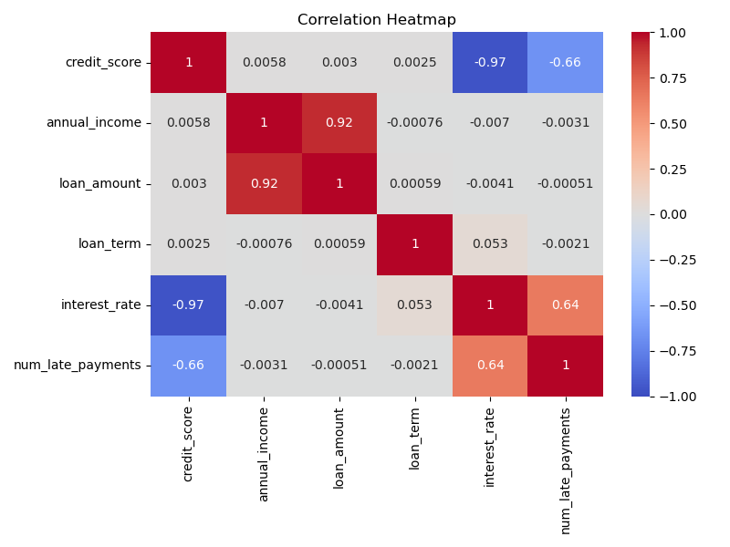
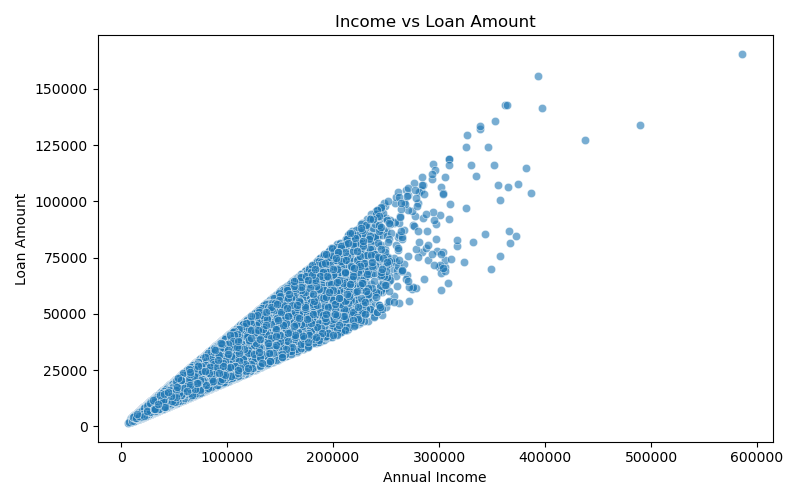
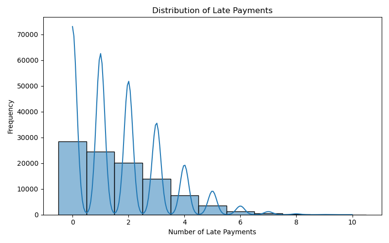